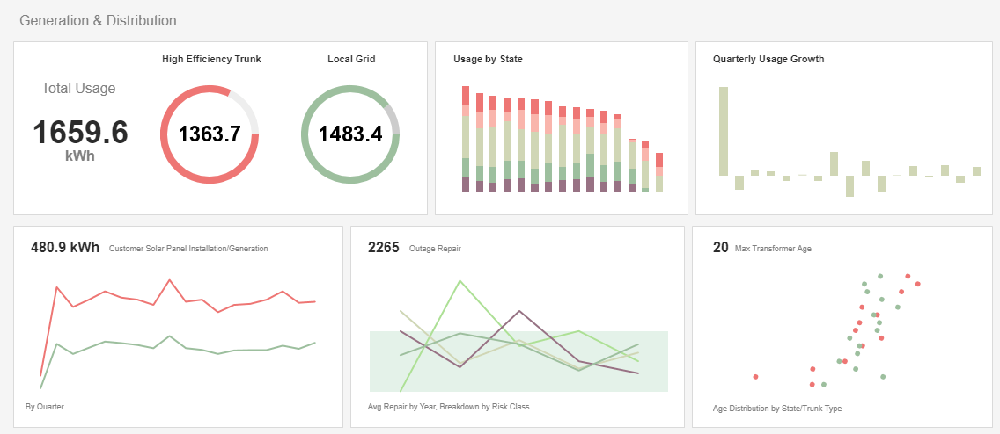
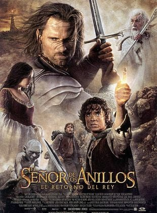
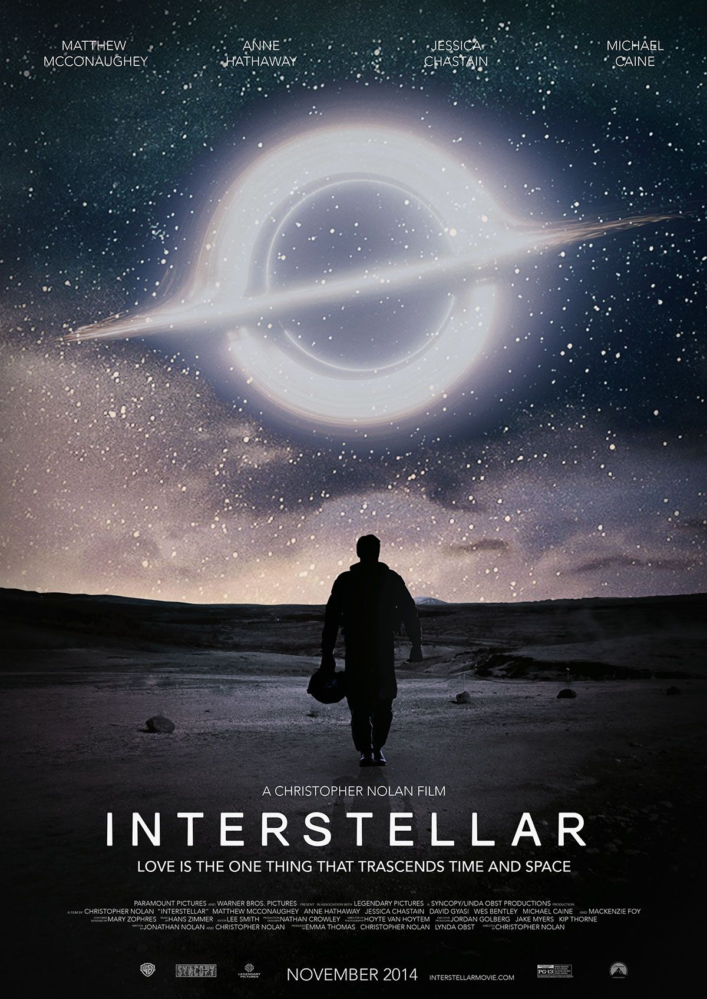
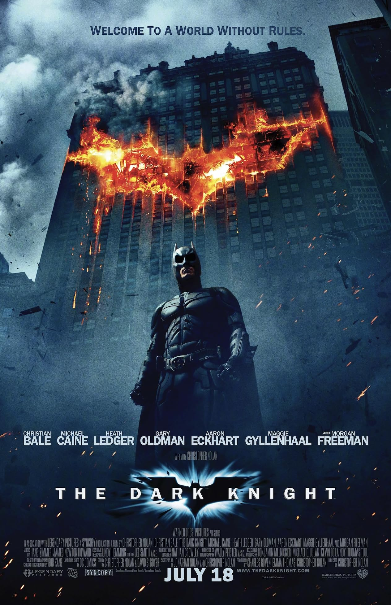

Sobre mí
Hola! Soy Sebastián Matulionis. Actualmente soy estudiante de la Tecnicatura en Desarrollo de Software y me interesan mucho las bases de datos y las tecnologías backend. También he realizado distintos cursos para mejorar mis habilidades en desarrollo web y en la construcción de aplicaciones. Mi objetivo es crear soluciones eficientes, bien estructuradas y fáciles de mantener.
Mis Proyectos

Sistema de Gestión de Datos
Aplicación desarrollada para administrar y organizar información de manera eficiente. El sistema permite registrar, consultar y actualizar datos utilizando una base de datos. Fue pensado para facilitar la gestión de información y mejorar la disponibilidad de los registros mediante una interfaz clara y funcional.
Aplicación de Control de Tareas
Aplicación diseñada para organizar y realizar seguimiento de tareas pendientes. Permite crear nuevas tareas, marcar su estado y mantener un registro ordenado de actividades. Este proyecto fue desarrollado con el objetivo de practicar la organización lógica de la información y la creación de herramientas simples que ayuden a mejorar la productividad.
Habilidades
| Tecnologías que domino | Tecnologías que quiero aprender | Hobbies |
|---|---|---|
| C# | React | Ver series y películas |
| SQL | Node.js | Salir a correr |
| HTML | Docker | Jugar videojuegos |
| CSS | ASP.NET Core | Tocar la guitarra |
Mi TOP 3 mejores películas

El Señor de los Anillos: El Retorno del Rey
Final de la trilogía dirigida por Peter Jackson. Combina una historia épica, personajes únicos y una producción increíble. Es una de las películas más influyentes del cine de ciencia ficción y un referente del género fantástico.

Interstellar
Película de ciencia ficción dirigida por Christopher Nolan que explora el viaje espacial, la relatividad del tiempo y el vínculo entre seres humanos ante el inminente fin de nuestro planeta. Destaca por su enfoque científico y su impresionante banda sonora.

The Dark Knight
Dirigida por Christopher Nolan, presenta una historia intensa sobre el conflicto entre el orden y el caos en Gotham City. La película se destaca por tener un tono más realista y por la inolvidable actuación de Heath Ledger como el Joker, uno de los villanos más icónicos del cine.